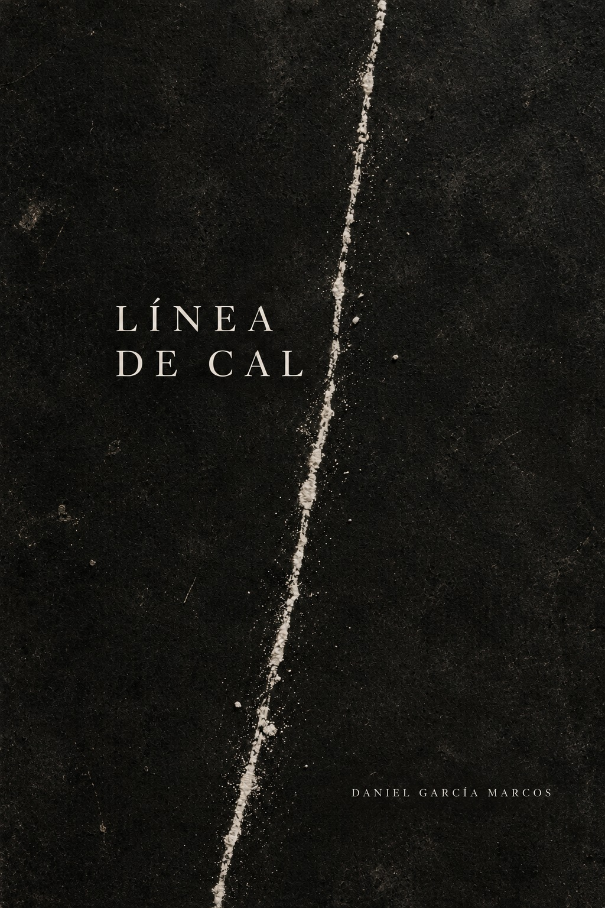

Poesía contemporánea, introspección y refugio para los silencios compartidos.
Explorar Obra
Un recorrido por los fragmentos del tiempo, la distancia y las verdades que solo se descubren al mirar hacia adentro. Haz clic en la portada para adquirirlo en Amazon.
Tengo fiebre pero el termómetro no lo sabe. Solo lo sabe mi piel cuando escucho tu nombre.
Nos desnudamos Poco a poco. Primero la risa. Después los miedos. Más tarde, las palabras que nos protegían del temblor.
Estás cerca. Lo suficiente para olerte. Para sentir el calor que dejas cuando respiras. Pero no me tocas